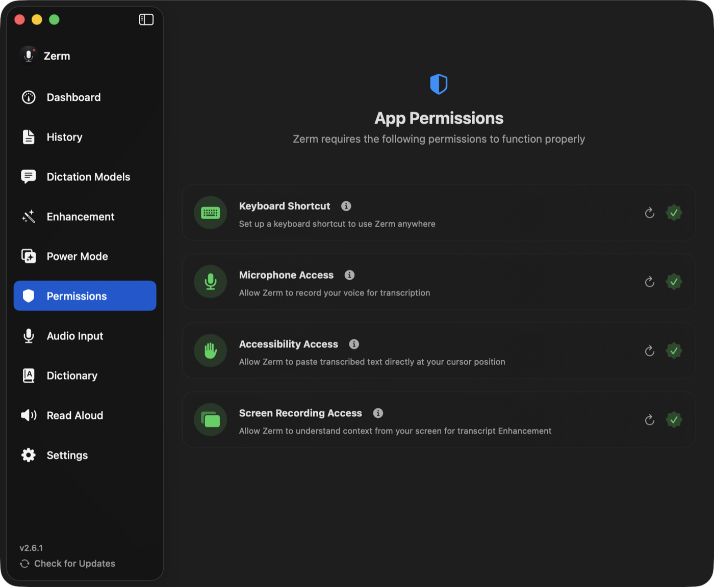

Privacy
Contextual awareness
The two optional context sources — clipboard and screen — and exactly what each one sends.
An enhancement prompt does better work when it knows what you are
writing about. Zerm can supply two kinds of context, each optional and each off unless
you switch it on in Enhancement settings.
Neither applies when your output mode is Instant, because no model
runs at all in that mode. Clipboard context is used by Instant + Refine and Enhanced.
Screen context is used only by Enhanced: Instant + Refine has already pasted by the time
the screen could be read.

Clipboard context
The current contents of your clipboard are passed to the model.
Useful when you have just copied the thing you are replying to. Off by default.
The clipboard is read at the moment the recording starts, and only when that dictation
can use AI. The captured value is cleared once the enhancement finishes.
Screen context
Text visible on your screen is captured and passed to the model.
This is the broader of the two, and the one to think about before enabling. It reads
what is on screen rather than what you chose to share, which means it may include
whatever else happens to be visible.
How it works: when a recording starts in Enhanced, Zerm captures the screen, extracts
text from the image, and includes that text in the prompt. What is sent to the model is
text, not the image. Zerm waits at most a second for it, so a slow capture never holds
up your text.
What is kept: nothing. The extracted text is held only for the duration of the
enhancement and then cleared. It is not written to disk and not saved to history.
Permission: requires Screen Recording. macOS often needs Zerm fully quit and
reopened before a fresh grant takes effect — see permissions.
A recording switched to Enhanced mid-way with ⌘E does not get screen context, because
the screen is only read at the start.
Per Power Mode
A Power Mode can turn screen context — Context Awareness in the
mode editor — on or off for its apps and websites, or leave it on your global setting.
Enable it only where it earns its keep.
Where the context goes
Context is added to the system message sent to your enhancement provider, in labelled
sections alongside the transcript. That means:
- With the On-Device provider, context never leaves your Mac.
- With Ollama or a Local CLI, it goes to whatever you are running locally.
- With a cloud provider, it goes to that provider along with the transcript.
If you enable screen context, know which provider you are pointing it at.
Vocabulary
Your dictionary vocabulary is also included whenever enhancement
runs, as spelling guidance. It is a fixed list you wrote yourself, not captured content,
and it has no permission or switch of its own.
Turning it all off
Set the output mode to Instant. No context is gathered, no model is called, and the
transcript goes straight to your cursor.